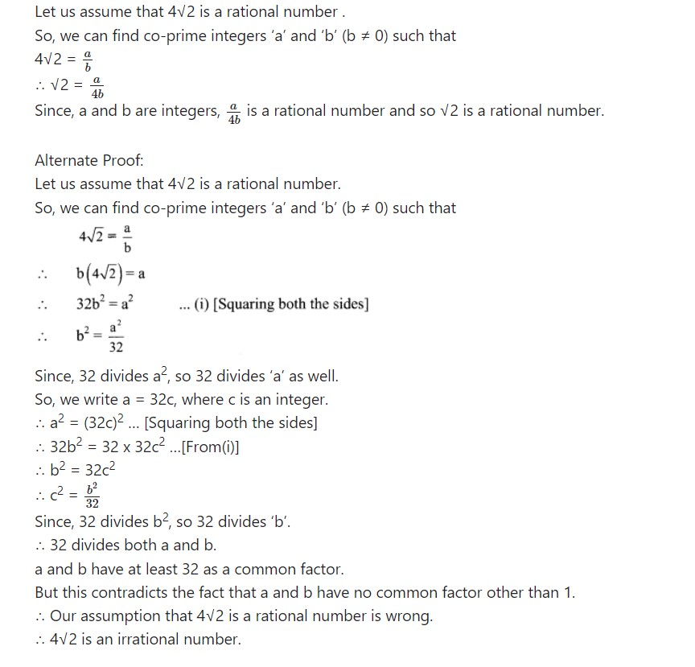
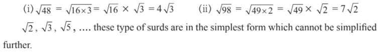
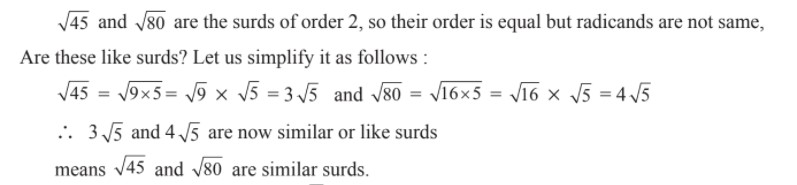
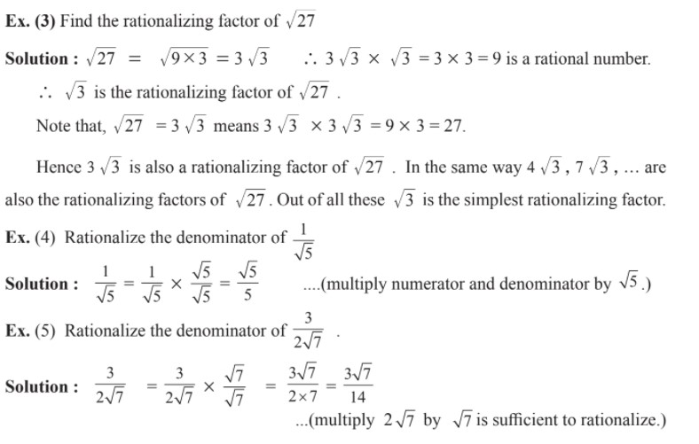
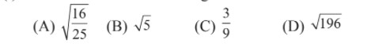
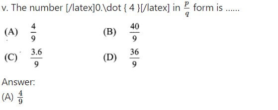

2. Real Numbers
Let's study.
Let’s recall.
In previous classes we have learnt about Natural numbers, Integers and Real numbers.
Let’s learn.
Properties of rational numbers
If a, b, c are rational numbers then
Let’s recall.
Decimal form of any rational number is either terminating or non-terminating recurring type.
Let’s learn.
To express the recurring decimal in p/q form.
Remember this !
PRACTICE SET 2.1
Q1. Classify the decimal form of the given rational numbers into terminating and non-terminating recurring type.
Q2. Write the following rational numbers in decimal form.
Q3. Write the following rational numbers in p/q form.
Solution:-

Let’s recall.
Let’s learn.
Irrational and real numbers
Decimal form of irrational numbers
Find the square root of 2 and 3 using devision method.

Note that in the above division, numbers after decimal point are unending, means it is non-terminating. Even no group of numbers or a single number is repeating in its quotient. So decimal expansion of such numbers is non terminating, non-recurring.
√2 , √3 are irrational numbers hence 1.4142... and 1.732... are irrational numbers too. Moreover, a number whose decimal expansion is non-terminating, non-recurring is irrational.

Remember this !
Let’s learn.
Properties of order relation on Real numbers
Square root of a Negative number
PRACTICE SET 2.2
Q1. Show that 4√2 is an irrational number.
Solution:-
Q2. Prove that 3 + √5 is an irrational number.
Solution:-
Q3. Represent the numbers √5 and √10 on a number line.
Solution:-
Q4. Write any three rational numbers between the two numbers given below.
i. 0.3 and –0.5
Solution:-
0.3 = 0.30 and -0.5 = -0.50

ii. – 2.3 and – 2.33
Solution:-
-2.3 = -2.300 and -2.33 = -2.330
We know that,
-2.300 > -2.301>… > -2.310>…> -2.320>…> -2.330
∴ the three rational numbers between -2.3 and -2.33 are -2.310, -2.320 and -2.325.
iii. 5.2 and 5.3
Solution:-
5.2 = 5.20 and 5.3 = 5.30
We know that,
5.20 < 5.21 < 5.22 < 5.23 < … < 5.30
∴ the three rational numbers between 5.2 and 5.3 are 5.21, 5.22 and 5.23.
iv. – 4.5 and – 4.6
Solution:-
-4.5 = -4.50 and -4.6 = -4.60 We know that,
-4.50 > -4.51 > -4.52 >… > – 4.55 >…>- 4.60
∴ the three rational numbers between -4.5 and -4.6 are -4.51, -4.52 and -4.55.
Let’s learn.
Root of positive rational number
Surds
Simplest form of a surd
Similar or like surds

Remember this !
In the simplest form of the surds if order of the surds and redicand are equal then the surds are similar or like surds.
Let’s learn.
Comparison of surds
Operations on like surds
Mathematical operations like addition, subtraction, multiplication and division can be done on like surds.
Rationalization of surd
If the product of two surds is a rational number, each surd is called a rationalizing factor of the other surd.
Remember this !
Rationalizing factor of a given surd is not unique. If a surd is a rationalizing factor of a given surd then a surd obtained by multiplying it with any non zero rational number is also a rationalizing factor of the given surd.
Remember this!
PRACTICE SET 2.3
Q1. State the order of the surds given below.
Solution:-
i. 3, ii. 2, iii. 4, iv. 2, v. 3
Q2. State which of the following are surds Justify.
Solution:-
Q3. Classify the given pair of surds into like surds and unlike surds.
Solution:-
If the order of the surds and the radicands are same, then the surds are like surds.
i.
Q4. Simplify the following surds.
Solution:-
Q5. Compare the following pair of surds.
Solution:-
Q6. Simplify.
Solution:-
Q7. Multiply and write the answer in the simplest form.
Solution:-
Q8. Divide and write form.
Solution:-

Q9. Rationalize the denominator.
Solution:-
Let’s recall.
Let’s learn.
Binomial quadratic surd
Remember this !
The product of conjugate pair of binomial surds is always a rational number.
Let’s learn.
Rationalization of the denominator
The product of conjugate binomial surds is always a rational number - by using this property, the rationalization of the denominator in the form of binomial surd can be done.
PRACTICE SET 2.4
Q1. Multiply
Solution:-
Q2. Rationalize the denominator.
Solution:-
Let’s learn.
Absolute value
PRACTICE SET 2.5
Q1. Find the value.
Solution:-
i. |15 – 2| = |13| = 13
ii. |4 – 9| = |-5| = 5
iii. |7| x |- 4| = 7 x 4 = 28
Q2. Solve.
Solution:-
PROBLEM SET 2
Q1. Choose the correct alternative answer for the questions given below.
(i) Which one of the following is an irrational number ?
Answer:- √5
(ii) Which of the following is an irrational number?
Answer:- 0.101001000……..
(iii) Decimal expansion of which of the following is non-terminating recurring ?
Answer:-
(iv) Every point on the number line represent, which of the following numbers?
(A)Natural numbers (B)Irrational numbers (C)Rational numbers (D)Real numbers.
Answer:- Real numbers

(vi) What is √n , if n is not a perfect square number ?
Answer:- Irrational number
Q1. Write the following numbers in p/q form.
Solution:-
Q3. Write the following numbers in its decimal form.
Solution:-
Q4. Show that 5 + √7 is an irrational number.
Solution:-
Q5. Write the following surds in simplest form.
Solution:-
Q6. Write the simplest form of rationalising factor for the given surds.